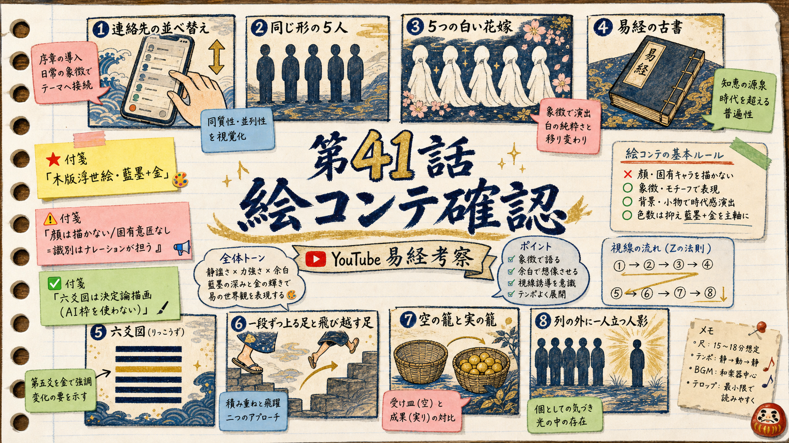

音声・画像に進む前に、各シーンの立ち絵（誰を・どの構図で・何の象徴・何色）を確定します。承認後この設計が visual_plan / 画像プロンプトへ機械展開されます。

| カット | 構図 | 被写体（象徴） | 象徴小道具 | 象徴色 | 動き | 狙い |
|---|---|---|---|---|---|---|
| V_01_01 | 手元アップ（斜め上から） | スマホを持つ手のシルエット、画面に縦並びの連絡先リスト | 連絡先リスト（一般的なUIの抽象化・文字は入れない・行が上下に並ぶ） | 藍地に墨、金の差し色 | 静止 | 順位づけの日常。顔なし・手のみ |
| V_01_02 | 俯瞰 | 並んだ行のうち一つが上に、一つが下に静かに入れ替わる | 入れ替わる二つの札のシルエット | 藍・墨・金 | 🎬 見せ場 | 順位が入れ替わる暗示（軽いDepthFlow） |
| V_02_01 | 横並びの引き | 同じ形の5つの人影シルエットが横一列（顔なし・固有意匠なし） | 5つの同一シルエット | 生成り地に藍、朱の差し色 | 静止 | 五つ子＝『同じ形が5つ』の一般記号。制服・髪型は描かない |
| V_02_02 | 引き | 5影のうち一番端の一体が半歩だけ後ろに下がっている | 5同一シルエット（1体が後退） | 藍・墨、後退した影に淡い金 | 静止 | 四葉＝最も後ろに置く子。誰と特定させない |
| V_02_07 | 引き | 2つの人影と、手前の『一位の札』ではなく奥の人影へ伸びる縁の線 | 縁を結ぶ一本の線・順位札 | 墨に朱の線 | 静止 | とらドラ比較＝順位の外で結ばれる（generic・キャラ描かない） |
| V_02_03 | 引き | 5影の一番端が最下段へ沈み、影が最も濃い | 沈む一体の濃い影 | 墨の濃淡、藍 | 静止 | 自分の順位を最下位に下げる罪悪感 |
| V_02_04 | 後ろ姿 | 子どもの小さな後ろ姿、遠景に五重塔と紅葉のシルエット | 京都の塔・紅葉（一般的な京都記号） | 朱の紅葉、藍の空、金の残光 | 静止 | 京都の原点。特定作品の場面は描かない |
| V_02_05 | 手元〜半身 | 目の前の一つの人影へ、そっと手が向く | 差し伸べる手のシルエット | 生成り・藍、手先に金 | 静止 | 原点と知らずに惹かれる |
| V_02_06 | 横並びの引き | 同じ形の5つの白い婚礼のシルエットが並ぶ（顔なし・一般的な白無垢） | 5つの同一の花嫁シルエット | 生成り・白、帯に金、背に藍 | 🎬 見せ場 | 花嫁衣装で全員見分け。婚礼衣装は一般化（固有意匠なし） |
| V_03_01 | 静物 | 和綴じの古い書物が開かれている | 和綴じ本（易経） | 生成りの紙、墨、金の栞 | 静止 | 三千年前の本 |
| V_03_02 | 静物カード | 『凶』を示す朱の印影（文字はRemotionカードで別途） | 朱印のにじみ | 朱・墨・生成り | 静止 | 征凶。画像内に文字は入れない（卦名/漢字はRemotion描画） |
| V_03_03 | 二枚並置 | 隣り合う二枚の卦のカードのシルエット（漸／帰妹） | 隣接する二つの枠 | 片方に藍(吉)、片方に朱(凶) | 静止 | 序卦の隣接。卦名文字はRemotionで |
| V_03_04 | 足元 | 一段ずつ上る足（漸）と、段を飛び越す足（帰妹）の対比 | 石段と足のシルエット | 墨・藍、段に金 | 静止 | 作法の違い |
| V_03_05 | 図解的 | 上下に分かれた二つの層（順位の層／作法の層） | 二層の帯 | 上層=藍、下層=金 | 静止 | 惹かれる順番と結ばれる作法は別の層 |
| GUA6 | 六爻図 | 帰妹の六爻図（決定論・gen-hexagram-diagram.py・gua_yao=5強調） | 六本の爻・第五爻を金で強調 | 藍墨の背景に金の爻 | 静止 | AI生成しない。short-hexcards/gen-hexagram-diagram で決定論描画 |
| V_03_07 | 重ね | 嫁ぐ娘の後ろ姿の影と、順位札を持つ手が重なる | 婚礼の影＋順位札 | 藍・墨・朱 | 静止 | 主語の橋渡し（嫁ぐ側と選ぶ側は同じ過ち） |
| V_04_01 | 手元アップ（幕1と同構図） | 冒頭の連絡先リストの手元へ回帰 | 連絡先リスト（V_01_01と同じ） | 藍・墨・金 | 静止 | 刃は冒頭場面へ返す＝同じ絵に戻す |
| V_04_02 | 半身の影 | 自分自身の影に、順位札が刺さる/貼られる | 自分の影・順位札 | 墨に朱の一点 | 静止 | 刃は自分自身へ |
| V_05_01 | 六爻図＋象辞 | 六爻図の下に、静かな水平線（永終＝終わりを見据える） | 六爻の下の一本の長い線 | 藍・金 | 静止 | 処方箋の背骨＝永終知敝 |
| V_05_02 | 足元 | 低い位置から踏み出す一歩（初爻） | 一歩踏み出す足のシルエット | 墨・藍、足先に金 | 静止 | 初爻：低位でも一歩で吉 |
| V_05_03 | 半身 | 片方を伏せても、まっすぐ前を見る横顔シルエット（二爻・眇能視） | 片目を伏せた横顔の影 | 藍・墨 | 静止 | 二爻：失望しても芯を保つ。顔は描かず輪郭のみ |
| V_05_04 | 静物 | 良し悪しを付けない、ただ置かれた一つの影（中立の踊り場） | 中央にぽつんと一つの影 | 生成り・淡い墨 | 静止 | 三爻＝中立。吉凶の色（朱/藍）を強く付けない |
| V_05_05 | 引き | 月の満ち欠け／季節が巡る暗示（四爻・遅れても時が来る） | 月・巡る円 | 藍の夜、金の月 | 🎬 見せ場 | 四爻：遅い縁も時が来る（軽いDepthFlow） |
| V_05_06 | 静物 | 華美な衣装より、質素だが実の詰まった佇まい（五爻） | 簡素な衣のシルエット | 生成り・墨、控えめな金 | 静止 | 五爻：装いより実 |
| V_05_07 | 静物 | 空の籠と、実の入った籠の対比（上爻・女承筐无実） | 二つの籠（空／実） | 生成り・墨、実に金 | 静止 | 上爻：形だけの結びは空になる |
| V_05_08 | 引き | 最下段の影に、静かに金の光が差す（四葉が選ばれた理由） | 最下段の影＋金の光 | 墨・藍、金の一条 | 🎬 見せ場 | 作法が漸へ抜けた |
| V_05_09 | 手元 | 順位表を、そっと机に伏せて置く手 | 伏せられた順位表 | 藍・墨・生成り | 静止 | 明日からの一手＝順位表を置く |
| V_06_01 | 半身の後ろ姿 | 順位札を手放し、ふっと肩の力が抜ける後ろ姿 | 手放される順位札 | 生成り・藍 | 静止 | 言い淀み『正直に言うと私にも癖はある』 |
| V_06_02 | 引き | 順位の列の外に一人静かに立つ人影に、金の光 | 列の外の一体＋金光 | 藍の余韻、金の光 | 🎬 見せ場 | 断言で締め＝順位を手放した人にだけ本命が見える |